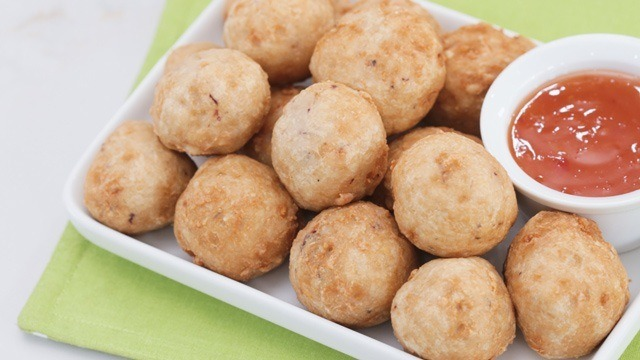
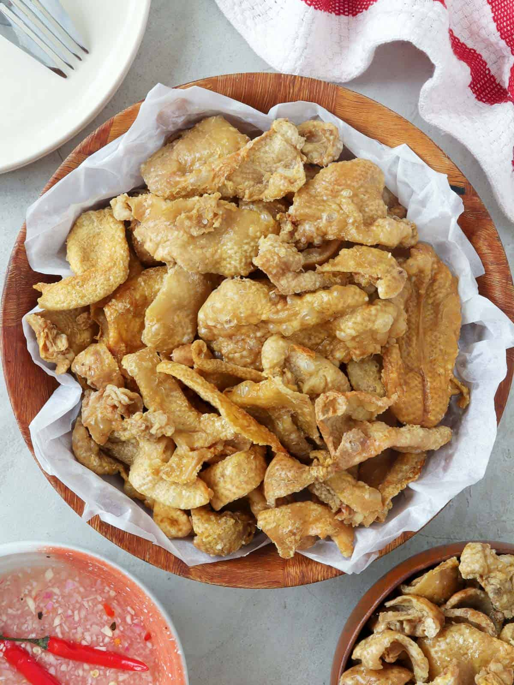
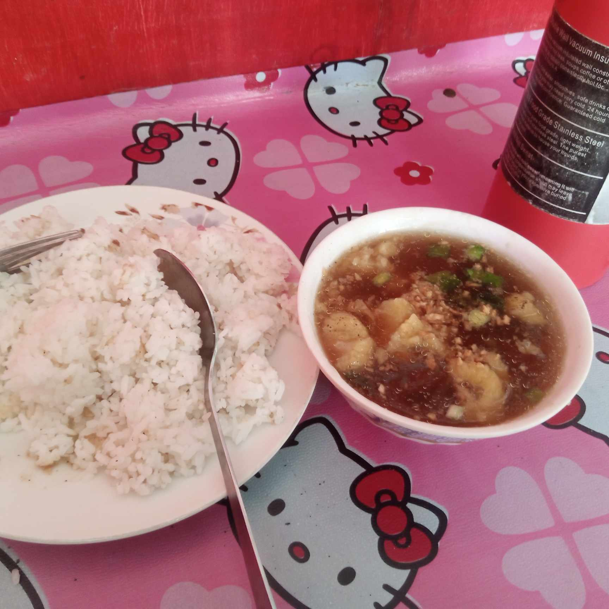
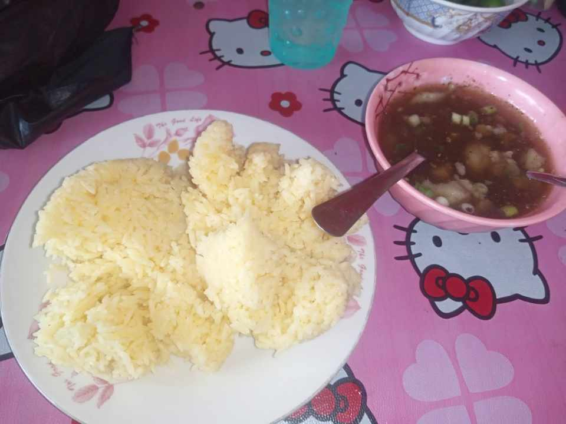

HELLO! WELCOME TO SALUDO'S STREET FOODS AND BEEF PARES!
HERE WE SHOWCASE THE FILIPINO CULTURAL FOODS WITH PURE AUTHENTICITY
IN PAIR WITH OUR VERY DELICIOUS FOOD DELICACY THE BEEF PARES!
BUY AND NOW AND HAVE A TASTE!
Feel free to order here or visit our Facebook Page.
HERE ARE THE LIST OF SOME POPULAR FILIPINO STREET FOODS WE OFFER:
Fish Ball
Filipino Fish Ball: A beloved street food delicacy in the Philippines. Crispy on the outside, tender on the inside, these flavorful fish balls are a must-try for a delicious snacking experience.
₱50.00
Squid Ball

Filipino Squid Ball: A delectable twist on the classic street food. Made from fresh squid, these savory balls are crispy, flavorful, and perfect for satisfying your seafood cravings on-the-go.
₱50.00
Kwek-Kwek
Filipino Kwek-Kwek: One of the popular street food here in the Philippines.
Kwek Kwek or Orange eggs are boiled quailed eggs coated with an orange batter and deep-fried until the batter is crispy.
A popular Filipino snack favorite.
₱50.00
Chicken Skin

Filipino Chicken Skin: A crispy and indulgent street food treat. Deep-fried to golden perfection, these savory chicken skin strips are bursting with flavor, making them a popular and satisfying snack choice.
₱50.00
HERE ARE SOME BEEF PARES COMBO MEALS WE OFFER:
Beef Pares With Plain/White Rice

Filipino Beef Pares With Plain Rice: A comforting and flavorful dish served with tender beef simmered in a sweet and savory sauce, paired with steamed plain rice for a satisfying and hearty meal experience.
₱50.00
Beef Pares With Java/Yellow Rice

Filipino Beef Pares with Java Rice: A delicious fusion of flavors. Succulent beef in a rich sauce, served with fragrant java rice infused with garlic and spices, creating a delectable and satisfying dining experience.